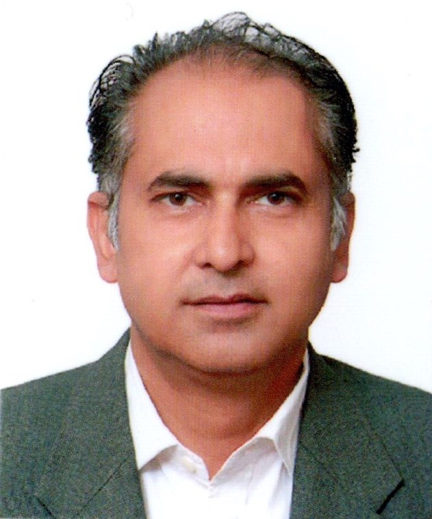
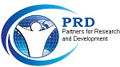

About Us
From Development Practice to Development Consulting
The Organization
PRD Consultants is an international development consulting and advisory firm operating through registered entities in the United Kingdom and Pakistan. PRD Consultants Ltd is registered with Companies House under the laws of England and Wales, while PRD Consultants (Private) Limited is incorporated under the corporate laws of Pakistan and registered with the Securities and Exchange Commission of Pakistan (SECP).
Building on more than a decade of development and humanitarian experience through Partners for Research and Development (PRD), PRD Consultants combines practical field knowledge with professional consulting expertise to support governments, development partners, donor-funded programmes, international organizations, NGOs, research institutions, and private sector organizations.
Our Unique Strength
What sets PRD Consultants apart is its foundation in real-world development practice combined with an international outlook. Our firm builds upon the experience and legacy of Partners for Research and Development (PRD), which has been engaged in humanitarian assistance, community development, public health, research, training, and social development initiatives since 2010.
During the floods of 2010 and 2011 in Pakistan, PRD worked alongside communities and stakeholders to support relief, recovery, and resilience-building efforts. These experiences strengthened our understanding of programme delivery, community engagement, institutional systems, and evidence-based development practice.
Who We Serve
- Government institutions and public sector organizations
- United Nations agencies and international development partners
- Bilateral and multilateral donor-funded programmes
- National and international non-governmental organizations
- Humanitarian and relief agencies
- Research institutions and academic organizations
- Private sector organizations, social enterprises, and development-focused initiatives

Welcome to PRD Consultants (Private) Limited. As development challenges continue to evolve, organizations need trusted partners who can combine technical expertise with practical implementation experience. At PRD Consultants, we bring together global perspectives, local knowledge, and evidence-based approaches to help governments, development partners, international organizations, NGOs, and private sector institutions achieve sustainable and measurable results.

Vision
To be a trusted global partner in development, delivering innovative, evidence-based solutions that strengthen institutions, improve lives, and create sustainable impact for communities and organizations.
Mission
To provide high-quality consulting, research, technical assistance, project management, monitoring and evaluation, and capacity-building services that enable governments, development partners, and organizations to achieve inclusive, measurable, and sustainable development outcomes.
Our Approach
We believe sustainable development is achieved through collaboration, evidence-based decision-making, innovation, and accountability. Our approach combines local knowledge and contextual understanding with international standards and best practices.
Experience Built Through Practice, Partnership, and Impact
PRD Consultants brings together years of development practice, humanitarian engagement, and professional consulting expertise to support organizations in designing, implementing, monitoring, and improving development interventions. Our experience is rooted in the legacy of Partners for Research and Development (PRD), engaged in humanitarian assistance, community development, public health, research, training, and social development initiatives since 2010.
Humanitarian and Community Development Experience
During the devastating floods of 2010 and 2011 in Sindh, PRD implemented humanitarian response and early recovery initiatives to support affected and vulnerable communities, gaining valuable experience in emergency coordination, community engagement, service delivery, and recovery planning. Key areas of engagement included:
- Emergency relief assistance for flood-affected communities
- Distribution of food and non-food assistance to displaced and vulnerable populations
- Support for safe drinking water, basic humanitarian needs, and community services
- Community-based health promotion and awareness initiatives
- Maternal and child health and nutrition awareness activities
- Community mobilization and volunteer-led support mechanisms
- Coordination with local institutions, government stakeholders, and humanitarian partners
Research and Evidence Generation
PRD Consultants supports organizations in generating reliable evidence to inform policies, strategies, programmes, and investment decisions. Our research capabilities include:
- Socioeconomic and household surveys
- Baseline, midline, and endline assessments
- Needs assessments and vulnerability analysis
- Market and institutional assessments
- Feasibility studies and sector research
- Quantitative and qualitative data collection and analysis
- Evidence-based reporting, knowledge products, and learning documentation
Technical Assistance and Institutional Strengthening
We support organizations in strengthening their systems, improving programme effectiveness, and enhancing institutional capacity through tailored technical assistance and advisory services, including:
- Programme design, review, and improvement strategies
- Institutional capacity assessments and strengthening initiatives
- Strategic planning and operational support
- Policy analysis, development, and advisory services
- Development of manuals, guidelines, frameworks, and standard operating procedures
- Training, knowledge transfer, and organizational development
- Capacity building for institutions, teams, and stakeholders
Leadership & Expert Network
PRD Consultants is supported by a multidisciplinary network of national and international experts with extensive experience across diverse development sectors. Our experts bring specialized knowledge and practical experience in areas including agriculture and rural development, livelihoods, governance, health, education, climate resilience, social protection, humanitarian response, monitoring and evaluation, and institutional development.
This diverse expertise enables PRD Consultants to assemble context-specific teams and provide high-quality technical solutions tailored to the needs of each assignment and client.
Our strength lies in understanding both the strategic and operational dimensions of development, enabling us to deliver solutions that are practical, innovative, and responsive to real-world challenges. We are committed to professionalism, integrity, partnership, and continuous learning.
As PRD Consultants continues to grow, our commitment remains focused on helping organizations transform ideas into action, evidence into informed decisions, and investments into meaningful development outcomes.
Our Values
Integrity
We uphold the highest standards of ethics, professionalism, transparency, and accountability in all our engagements.
Excellence
We are committed to delivering high-quality services, technical excellence, and results that create meaningful value for our clients and partners.
Innovation
We embrace creativity, learning, technology, and evidence-based approaches to address complex development challenges.
Collaboration
We believe in meaningful partnerships, stakeholder engagement, and collective action to achieve sustainable impact.
Inclusiveness
We promote equitable participation, diversity, and people-centered approaches that ensure development benefits reach all communities.
Accountability
We take responsibility for our commitments, performance, and the quality, integrity, and effectiveness of our work.
Sustainability
We support solutions that generate lasting social, economic, environmental, and institutional benefits.
Our Office LocationsUnited Kingdom Head Office and Pakistan Country & Regional Operations
Head Office – United Kingdom
International Operations & Partnerships
86 Wind Road, Ystradgynlais, Swansea, Wales, United Kingdom
Phone: +44 7304 150 461
Country Office – Pakistan
Programme Delivery & Technical Support
Office No. 1, Mezzanine Floor, 25-Huma Plaza, Fazal-e-Haq Road, Blue Area, Islamabad, Pakistan
Phone: +92 51 260 4334
Regional Office – Sindh
Field Operations & Provincial Engagement
House No. A28 & 29, Bakhtawar Colony, Opposite Abdullah Sports City, Qasimabad, Hyderabad, Pakistan
Phone: +92 222 657 214